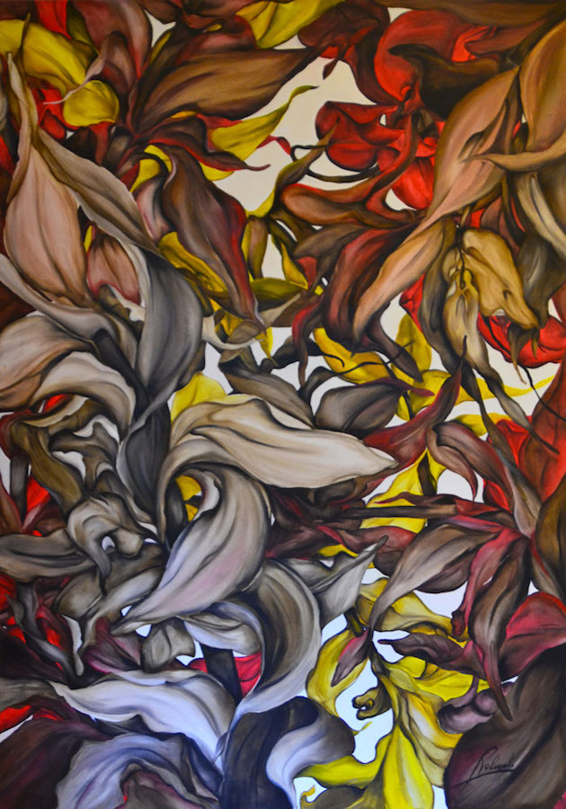
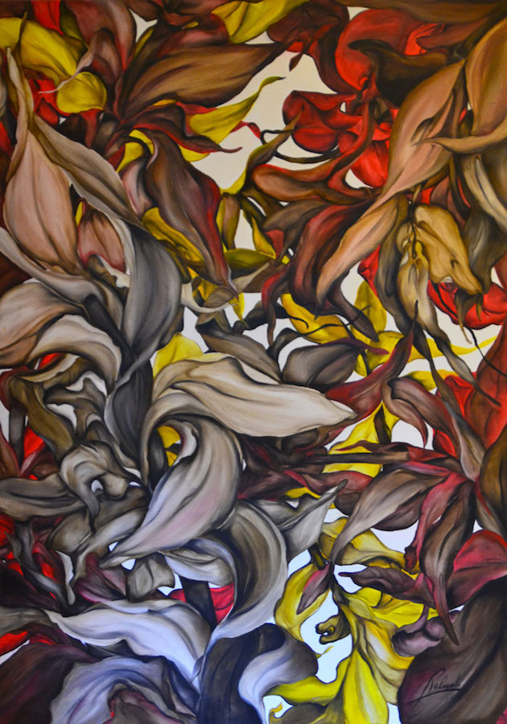

La pittura a olio affonda le proprie radici nell’antichità. Il supporto utilizzato originariamente era il legno, sostituito nel corso dei secoli dalla tela, molto più leggera e quindi più agevole per il trasporto delle opere. Un grande vantaggio della tecnica a olio sta nella sua duttilità, permettendo di ottenere effetti cromatici particolari lavorando il colore “nel bagnato”. Inoltre, una volta seccati, i colori mantengono una lunga durata nel tempo.
Nei suoi dipinti olio su tela Rolando raramente parte disegnando una bozza dell’opera a matita. Più spesso le opere nascono direttamente dal pennello, senza un disegno definito in mente, ma lasciando piuttosto che sia l’ispirazione a guidare la mano nella realizzazione.
Dal punto di vista stilistico le opere di Rolando traggono spunto dalla pittrice polacca Tamara de Lempicka, utilizzando generalmente pochi colori ma abbondando con pieghe e sinuosità.
La dimensione delle tele utilizzate, intelaiate su cornici in legno, varia da superfici più piccole come il 20cm x 30cm a quelle più grandi come 100cm x 200cm.
 

Le opere sono talvolta estese su due tele accostate, creando un particolare effetto agli occhi dello spettatore.
“A volte capita che parta da un disegno, arrivi quasi alla conclusione, e mi renda conto di non esserne troppo soddisfatto. Allora indosso un paio di guanti e passo le mani sulla tela rimescolando il tutto per ottenere un nuovo colore di sfondo, da cui possa partire con una nuova idea. E’ così che nascono creazioni che in partenza non immaginavo, dando vita a un quadro nuovo, che finalmente mi piaccia.”